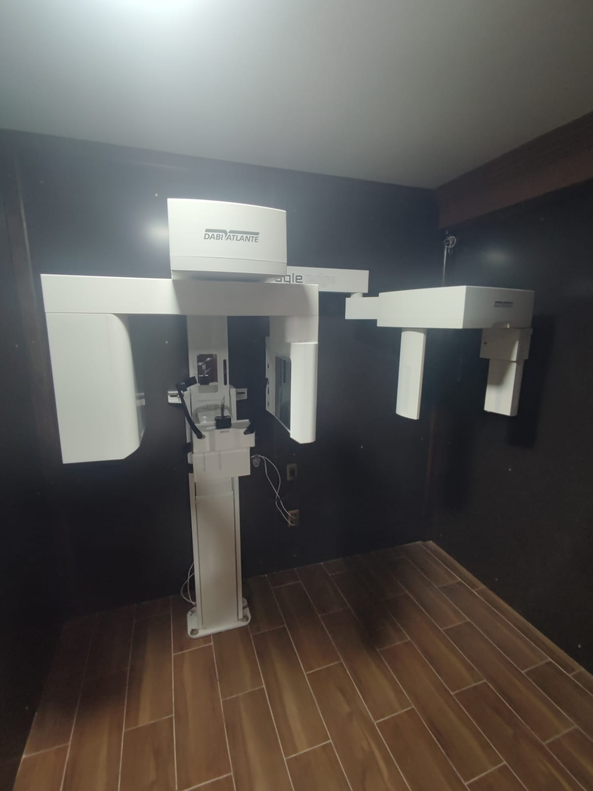
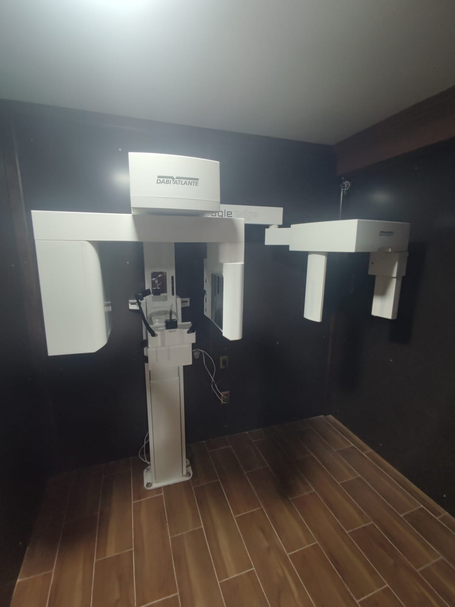

Bienvenido
Ofrecemos servicios de radiología y tomografía dental con tecnología avanzada.
Nuestros Servicios
Radiografías dentales
Las radiografías dentales son un tipo de imagen de los dientes y la boca. Los rayos X son una forma de radiación electromagnética de alta energía y penetran el cuerpo para formar una imagen en una película o en una pantalla. Las radiografías pueden tomarse de manera digital o en una película.
Las estructuras que son densas (como las obturaciones de plata o restauraciones metálicas) bloquearán la mayor parte de la energía lumínica de los rayos X. Esto aparecerá de color blanco en la película revelada. Las estructuras que contienen aire aparecerán de color negro, y los dientes, tejido y líquidos aparecerán como sombras de color gris.
Tomografías dentales
La tomografía computarizada dental de haz en cónico (TC) es un tipo especial de equipo de rayos X que se utiliza cuando los rayos X dentales o faciales regulares no son suficientes. Su médico podría usar esta tecnología para producir imágenes tridimensionales (3D) de sus dientes, su tejidos blandos, y de la trayectoria de los nervios y huesos en una sola exploración.
Conoce a Nuestros Especialistas

Dr. Mauricio Cladera
Especialidad: Dentista General
Contacto: +591 77710879
Radio Imagen en Ortodoncia "RIO"
La experiencia de odontólogos profesionales les traen el concepto más moderno en atención dental integral. Somos una red privada que brinda servicios radiologicos dentales para toda la familia.
Adultos y niños cuentan con ambientes especiales para su espera y su tratamiento. Con tecnología de avanzada, equipos modernos y sofisticados, profesionales altamente calificados, en infraestructuras que lo harán sentir muy cómodo... Visítenos.
MISIÓN
Brindar servicios radiograficos integrales contribuyendo a resolver eficazmente los requerimientos profesionales para el correcto tratamiento de las personas, aplicando para ello conceptos de excelencia en el servicio, eficiencia en la gestión y calidez personalizada en la atención.
VISIÓN
Ser un centro de radiologia dental líder, con lo más avanzado en tecnología y con especialistas que reúnan los requisitos máximos de profesionalismo y excelencia, para satisfacer al máximo las exigencias de las personas e ir más allá de sus expectativas, deseando establecer una relación duradera con cada persona basada en el tratamiento personalizado y orientado al detalle brindándoles nuestra experiencia a su servicio.


 

¡Contáctanos!
📍 Dirección: Calle Francisco Carvajal, entre calles 10 & 11, zona Villa Dolores, El Alto
⏰ Horarios de Atención:
- Lunes a Sábado: 8:30 a 14:00
- Consultas por la tarde se realizan bajo cita o coordinación previa.
- Domingos: Sin atención
¡Agenda tu cita!
⚠️ Instrucciones: Seleccione la fecha y horario en la que desea reservar su cita.
Su comprobante de reserva sera enviada a su correo electronico.